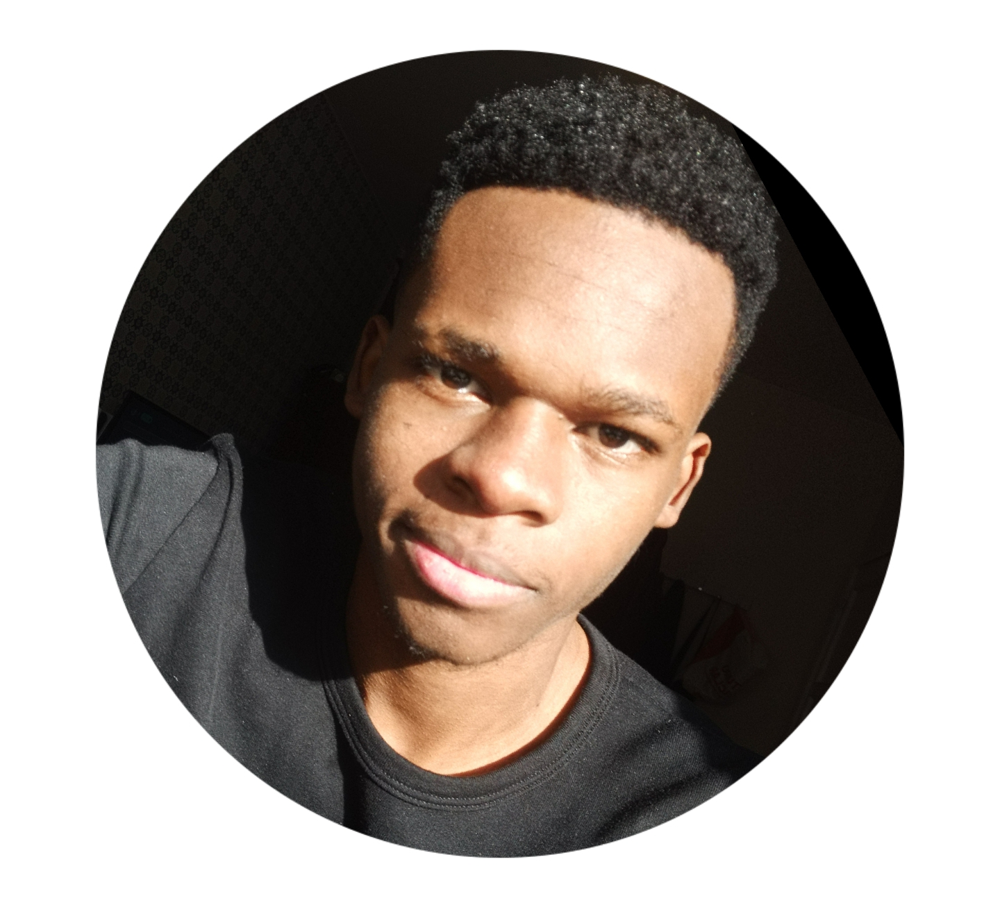

Sobre Mim

Olá, eu sou o Mike e me dedico ao desenvolvimento tecnológico, design e empreendedorismo.
MyKey foi criado para apresentar projetos e oferecer soluções criativas e funcionais, combinando expertise técnica com metodologias estruturadas para entregas de alta performance.
Atualmente estou desenvolvendo sites, estudando novas tecnologias e buscando sempre evoluir.
Minhas Habilidades
- Desenvolvimento Web Front-end
- UI/UX Design
- Design Responsivo
- JavaScript Moderno
- Robótica/Automação
Minha Jornada
2022 - Presente
Desenvolvedor/Editor Freelancer
Criação de sites e aplicações web para clientes diversos, com foco em soluções personalizadas.
Criação de logotipos, designs e captação de imagens unicas.
Criação e edição de videos publicitarios e pessoais.
Desenvolvimento de projetos de automação
Edição de textos personalizadas.
2020 - 2023
Estudo De Técnicas De DesenvolvimentoWeb, Automação E Ediçao
Aprimoramento de habilidades através de cursos e projetos pessoais.